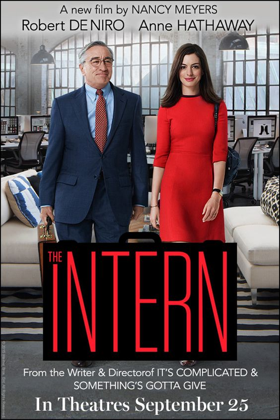

home
inspiration
top fives
My Top 5's
by. Jade Kang
top five favorite movies
: I enjoy movies that reflect on life and remind me of everyday happiness.
The following films give me that comforting feeling.
- The INTERN

- About Time
- Titanic

- Me Before You
- The Devil Wears Prada
top five favorite songs by Taylor Swift
: I appreciate Taylor Swift’s unique cheerfulness, but I also cherish her lyrics that offer comfort and reassurance.
The following songs particularly showcase her special qualities.
top five favorite food
- Korean Food
- - Tteokbokki

I enjoy the perfect balance of spiciness and sweetness in tteokbokki.
- - Bulgogi

The sweet meat and smoky flavor pair perfectly with rice and kimchi.
- Japanese Food
- - Sushi

I love the fresh taste of sashimi and the aroma of wasabi.
- Chinese Food
- - Malatang
It's really delicious to blanch various vegetables in a spicy broth.
- Vietnamese Food
- - PHO
The rich meat broth and rice noodles are easy to digest and very satisfying.